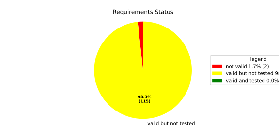
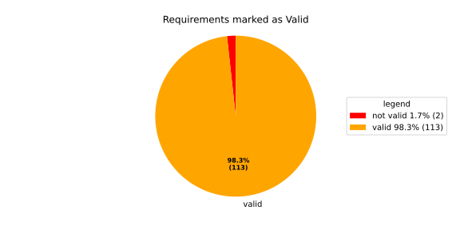
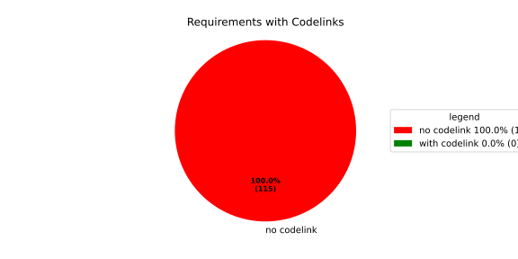
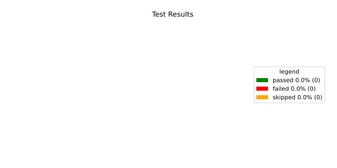
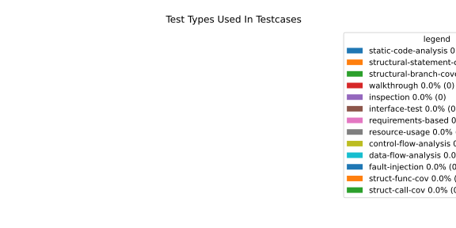
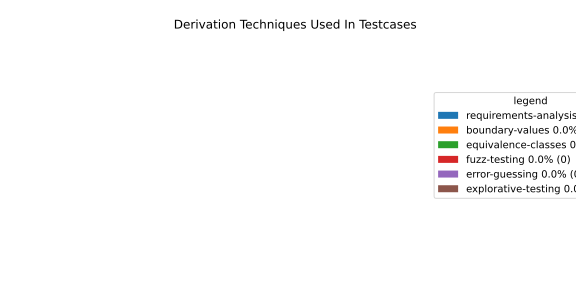

<!DOCTYPE html>


<html lang="en" data-content_root="./" >

  <head>
    <meta charset="utf-8" />
    <meta name="viewport" content="width=device-width, initial-scale=1.0" /><meta name="viewport" content="width=device-width, initial-scale=1" />

    <title>Component Requirements Statistics &#8212; Lifecycle and Health Management  documentation</title>
  
  
  
  <script data-cfasync="false">
    document.documentElement.dataset.mode = localStorage.getItem("mode") || "";
    document.documentElement.dataset.theme = localStorage.getItem("theme") || "";
  </script>
  <!--
    this give us a css class that will be invisible only if js is disabled
  -->
  <noscript>
    <style>
      .pst-js-only { display: none !important; }

    </style>
  </noscript>
  
  <!-- Loaded before other Sphinx assets -->
  <link href="_static/styles/theme.css?digest=8878045cc6db502f8baf" rel="stylesheet" />
<link href="_static/styles/pydata-sphinx-theme.css?digest=8878045cc6db502f8baf" rel="stylesheet" />

    <link rel="stylesheet" type="text/css" href="_static/pygments.css?v=8f2a1f02" />
    <link rel="stylesheet" type="text/css" href="_static/graphviz.css?v=4ae1632d" />
    <link rel="stylesheet" type="text/css" href="_static/css/score.css?v=6e51530f" />
    <link rel="stylesheet" type="text/css" href="_static/css/score_needs.css?v=e97392eb" />
    <link rel="stylesheet" type="text/css" href="_static/css/score_design.css?v=d9fd870c" />
    <link rel="stylesheet" type="text/css" href="_static/sphinx-design.min.css?v=95c83b7e" />
    <link rel="stylesheet" type="text/css" href="_static/sphinx-data-viewer/jsonview.bundle.css?v=f6ef2277" />
    <link rel="stylesheet" type="text/css" href="_static/sphinx-needs/libs/html/datatables.min.css?v=4b4fd840" />
    <link rel="stylesheet" type="text/css" href="_static/sphinx-needs/common_css/need_core.css?v=f5b60a78" />
    <link rel="stylesheet" type="text/css" href="_static/sphinx-needs/common_css/need_toggle.css?v=5c6620df" />
    <link rel="stylesheet" type="text/css" href="_static/sphinx-needs/common_css/needstable.css?v=5e1b6797" />
    <link rel="stylesheet" type="text/css" href="_static/sphinx-needs/common_css/need_links.css?v=2150a916" />
    <link rel="stylesheet" type="text/css" href="_static/sphinx-needs/common_css/need_style.css?v=92936fa5" />
    <link rel="stylesheet" type="text/css" href="_static/sphinx-needs/modern.css?v=803738c0" />
  
  <!-- So that users can add custom icons -->
  <script src="_static/scripts/fontawesome.js?digest=8878045cc6db502f8baf"></script>
  <!-- Pre-loaded scripts that we'll load fully later -->
  <link rel="preload" as="script" href="_static/scripts/bootstrap.js?digest=8878045cc6db502f8baf" />
<link rel="preload" as="script" href="_static/scripts/pydata-sphinx-theme.js?digest=8878045cc6db502f8baf" />

    <script src="_static/jquery.js?v=5d32c60e"></script>
    <script src="_static/_sphinx_javascript_frameworks_compat.js?v=2cd50e6c"></script>
    <script src="_static/documentation_options.js?v=5929fcd5"></script>
    <script src="_static/doctools.js?v=9bcbadda"></script>
    <script src="_static/sphinx_highlight.js?v=dc90522c"></script>
    <script src="_static/design-tabs.js?v=f930bc37"></script>
    <script src="_static/sphinx-data-viewer/jsonview.bundle.js?v=18cd53c5"></script>
    <script src="_static/sphinx-data-viewer/jsonview_loader.js?v=f7ff7e7d"></script>
    <script src="_static/sphinx-needs/libs/html/datatables.min.js?v=8a4aee21"></script>
    <script src="_static/sphinx-needs/libs/html/datatables_loader.js?v=a2cae175"></script>
    <script src="_static/sphinx-needs/libs/html/sphinx_needs_collapse.js?v=dca66431"></script>
    <script>DOCUMENTATION_OPTIONS.pagename = 'statistics';</script>
    <script>
        DOCUMENTATION_OPTIONS.theme_version = '0.16.1';
        DOCUMENTATION_OPTIONS.theme_switcher_json_url = 'https://eclipse-score.github.io/lifecycle/versions.json';
        DOCUMENTATION_OPTIONS.theme_switcher_version_match = '';
        DOCUMENTATION_OPTIONS.show_version_warning_banner =
            false;
        </script>
    <link rel="index" title="Index" href="genindex.html" />
    <link rel="search" title="Search" href="search.html" />
    <link rel="prev" title="Known Limitations" href="module/launch_manager_deamon/product_documentation/known_limitations.html" />
  <meta name="viewport" content="width=device-width, initial-scale=1"/>
  <meta name="docsearch:language" content="en"/>
  <meta name="docsearch:version" content="0.1" />
  </head>
  
  
  <body data-bs-spy="scroll" data-bs-target=".bd-toc-nav" data-offset="180" data-bs-root-margin="0px 0px -60%" data-default-mode="">

  
  
  <div id="pst-skip-link" class="skip-link d-print-none"><a href="#main-content">Skip to main content</a></div>
  
  <div id="pst-scroll-pixel-helper"></div>
  
  <button type="button" class="btn rounded-pill" id="pst-back-to-top">
    <i class="fa-solid fa-arrow-up"></i>Back to top</button>

  
  <dialog id="pst-search-dialog">
    
<form class="bd-search d-flex align-items-center"
      action="search.html"
      method="get">
  <i class="fa-solid fa-magnifying-glass"></i>
  <input type="search"
         class="form-control"
         name="q"
         placeholder="Search the docs ..."
         aria-label="Search the docs ..."
         autocomplete="off"
         autocorrect="off"
         autocapitalize="off"
         spellcheck="false"/>
  <span class="search-button__kbd-shortcut"><kbd class="kbd-shortcut__modifier">Ctrl</kbd>+<kbd>K</kbd></span>
</form>
  </dialog>

  <div class="pst-async-banner-revealer d-none">
  <aside id="bd-header-version-warning" class="d-none d-print-none" aria-label="Version warning"></aside>
</div>

  
    <header class="bd-header navbar navbar-expand-lg bd-navbar d-print-none">
<div class="bd-header__inner bd-page-width">
  <button class="pst-navbar-icon sidebar-toggle primary-toggle" aria-label="Site navigation">
    <span class="fa-solid fa-bars"></span>
  </button>
  
  
  <div class="col-lg-3 navbar-header-items__start">
    
      <div class="navbar-item">

  
    
  

<a class="navbar-brand logo" href="index.html">
  
  
  
  
  
  
    <p class="title logo__title">Eclipse S-CORE</p>
  
</a></div>
    
  </div>
  
  <div class="col-lg-9 navbar-header-items">
    
    <div class="me-auto navbar-header-items__center">
      
        <div class="navbar-item">
<nav>
  <ul class="bd-navbar-elements navbar-nav">
    
<li class="nav-item ">
  <a class="nav-link nav-internal" href="module/health_monitor/index.html">
    HealthMonitor
  </a>
</li>


<li class="nav-item ">
  <a class="nav-link nav-internal" href="module/launch_manager_deamon/index.html">
    Launch Manager Daemon
  </a>
</li>


<li class="nav-item current active">
  <a class="nav-link nav-internal" href="#">
    Component Requirements Statistics
  </a>
</li>

  </ul>
</nav></div>
      
    </div>
    
    
    <div class="navbar-header-items__end">
      
        <div class="navbar-item navbar-persistent--container">
          

<button class="btn search-button-field search-button__button pst-js-only" title="Search" aria-label="Search" data-bs-placement="bottom" data-bs-toggle="tooltip">
 <i class="fa-solid fa-magnifying-glass"></i>
 <span class="search-button__default-text">Search</span>
 <span class="search-button__kbd-shortcut"><kbd class="kbd-shortcut__modifier">Ctrl</kbd>+<kbd class="kbd-shortcut__modifier">K</kbd></span>
</button>
        </div>
      
      
        <div class="navbar-item">

<button class="btn btn-sm nav-link pst-navbar-icon theme-switch-button pst-js-only" aria-label="Color mode" data-bs-title="Color mode"  data-bs-placement="bottom" data-bs-toggle="tooltip">
  <i class="theme-switch fa-solid fa-sun                fa-lg" data-mode="light" title="Light"></i>
  <i class="theme-switch fa-solid fa-moon               fa-lg" data-mode="dark"  title="Dark"></i>
  <i class="theme-switch fa-solid fa-circle-half-stroke fa-lg" data-mode="auto"  title="System Settings"></i>
</button></div>
      
        <div class="navbar-item"><ul class="navbar-icon-links"
    aria-label="Icon Links">
        <li class="nav-item">
          
          
          
          
          
          
          
          
          <a href="https://github.com/eclipse-score" title="GitHub" class="nav-link pst-navbar-icon" rel="noopener" target="_blank" data-bs-toggle="tooltip" data-bs-placement="bottom"><i class="fa-brands fa-github fa-lg" aria-hidden="true"></i>
            <span class="sr-only">GitHub</span></a>
        </li>
</ul></div>
      
        <div class="navbar-item">
<div class="version-switcher__container dropdown pst-js-only">
  <button id="pst-version-switcher-button-2"
    type="button"
    class="version-switcher__button btn btn-sm dropdown-toggle"
    data-bs-toggle="dropdown"
    aria-haspopup="listbox"
    aria-controls="pst-version-switcher-list-2"
    aria-label="Version switcher list"
  >
    Choose version  <!-- this text may get changed later by javascript -->
    <span class="caret"></span>
  </button>
  <div id="pst-version-switcher-list-2"
    class="version-switcher__menu dropdown-menu list-group-flush py-0"
    role="listbox" aria-labelledby="pst-version-switcher-button-2">
    <!-- dropdown will be populated by javascript on page load -->
  </div>
</div></div>
      
    </div>
    
  </div>
  
  
    <div class="navbar-persistent--mobile">

<button class="btn search-button-field search-button__button pst-js-only" title="Search" aria-label="Search" data-bs-placement="bottom" data-bs-toggle="tooltip">
 <i class="fa-solid fa-magnifying-glass"></i>
 <span class="search-button__default-text">Search</span>
 <span class="search-button__kbd-shortcut"><kbd class="kbd-shortcut__modifier">Ctrl</kbd>+<kbd class="kbd-shortcut__modifier">K</kbd></span>
</button>
    </div>
  

  
    <button class="pst-navbar-icon sidebar-toggle secondary-toggle" aria-label="On this page">
      <span class="fa-solid fa-outdent"></span>
    </button>
  
</div>

    </header>
  

  <div class="bd-container">
    <div class="bd-container__inner bd-page-width">
      
      
      
      <dialog id="pst-primary-sidebar-modal"></dialog>
      <div id="pst-primary-sidebar" class="bd-sidebar-primary bd-sidebar">
        

  
  <div class="sidebar-header-items sidebar-primary__section">
    
    
      <div class="sidebar-header-items__center">
        
          
          
            <div class="navbar-item">
<nav>
  <ul class="bd-navbar-elements navbar-nav">
    
<li class="nav-item ">
  <a class="nav-link nav-internal" href="module/health_monitor/index.html">
    HealthMonitor
  </a>
</li>


<li class="nav-item ">
  <a class="nav-link nav-internal" href="module/launch_manager_deamon/index.html">
    Launch Manager Daemon
  </a>
</li>


<li class="nav-item current active">
  <a class="nav-link nav-internal" href="#">
    Component Requirements Statistics
  </a>
</li>

  </ul>
</nav></div>
          
        
      </div>
    
    
    
      <div class="sidebar-header-items__end">
        
          <div class="navbar-item">

<button class="btn btn-sm nav-link pst-navbar-icon theme-switch-button pst-js-only" aria-label="Color mode" data-bs-title="Color mode"  data-bs-placement="bottom" data-bs-toggle="tooltip">
  <i class="theme-switch fa-solid fa-sun                fa-lg" data-mode="light" title="Light"></i>
  <i class="theme-switch fa-solid fa-moon               fa-lg" data-mode="dark"  title="Dark"></i>
  <i class="theme-switch fa-solid fa-circle-half-stroke fa-lg" data-mode="auto"  title="System Settings"></i>
</button></div>
        
          <div class="navbar-item"><ul class="navbar-icon-links"
    aria-label="Icon Links">
        <li class="nav-item">
          
          
          
          
          
          
          
          
          <a href="https://github.com/eclipse-score" title="GitHub" class="nav-link pst-navbar-icon" rel="noopener" target="_blank" data-bs-toggle="tooltip" data-bs-placement="bottom"><i class="fa-brands fa-github fa-lg" aria-hidden="true"></i>
            <span class="sr-only">GitHub</span></a>
        </li>
</ul></div>
        
          <div class="navbar-item">
<div class="version-switcher__container dropdown pst-js-only">
  <button id="pst-version-switcher-button-3"
    type="button"
    class="version-switcher__button btn btn-sm dropdown-toggle"
    data-bs-toggle="dropdown"
    aria-haspopup="listbox"
    aria-controls="pst-version-switcher-list-3"
    aria-label="Version switcher list"
  >
    Choose version  <!-- this text may get changed later by javascript -->
    <span class="caret"></span>
  </button>
  <div id="pst-version-switcher-list-3"
    class="version-switcher__menu dropdown-menu list-group-flush py-0"
    role="listbox" aria-labelledby="pst-version-switcher-button-3">
    <!-- dropdown will be populated by javascript on page load -->
  </div>
</div></div>
        
      </div>
    
  </div>
  
    <div class="sidebar-primary-items__start sidebar-primary__section">
        <div class="sidebar-primary-item">
<nav class="bd-docs-nav bd-links"
     aria-label="Section Navigation">
  <p class="bd-links__title" role="heading" aria-level="1">Section Navigation</p>
  <div class="bd-toc-item navbar-nav"></div>
</nav></div>
    </div>
  
  
  <div class="sidebar-primary-items__end sidebar-primary__section">
      <div class="sidebar-primary-item">
<div id="ethical-ad-placement"
      class="flat"
      data-ea-publisher="readthedocs"
      data-ea-type="readthedocs-sidebar"
      data-ea-manual="true">
</div></div>
  </div>


      </div>
      
      <main id="main-content" class="bd-main" role="main">
        
        
          <div class="bd-content">
            <div class="bd-article-container">
              
              <div class="bd-header-article d-print-none">
<div class="header-article-items header-article__inner">
  
    <div class="header-article-items__start">
      
        <div class="header-article-item">

<nav aria-label="Breadcrumb" class="d-print-none">
  <ul class="bd-breadcrumbs">
    
    <li class="breadcrumb-item breadcrumb-home">
      <a href="index.html" class="nav-link" aria-label="Home">
        <i class="fa-solid fa-home"></i>
      </a>
    </li>
    <li class="breadcrumb-item active" aria-current="page"><span class="ellipsis">Component Requirements Statistics</span></li>
  </ul>
</nav>
</div>
      
    </div>
  
  
</div>
</div>
              
              
              
                
<div id="searchbox"></div>
                <article class="bd-article">
                  
  <section id="component-requirements-statistics">
<span id="life-statistics"></span><h1>Component Requirements Statistics<a class="headerlink" href="#component-requirements-statistics" title="Link to this heading">#</a></h1>
<section id="overview">
<h2>Overview<a class="headerlink" href="#overview" title="Link to this heading">#</a></h2>

</section>
<section id="in-detail">
<h2>In Detail<a class="headerlink" href="#in-detail" title="Link to this heading">#</a></h2>
<div class="sd-container-fluid sd-sphinx-override sd-mb-4 score-grid docutils">
<div class="sd-row sd-row-cols-2 sd-row-cols-xs-2 sd-row-cols-sm-2 sd-row-cols-md-2 sd-row-cols-lg-2 docutils">
<div class="sd-col sd-d-flex-row docutils">
<div class="sd-card sd-sphinx-override sd-w-100 sd-shadow-sm docutils">
<div class="sd-card-body docutils">

</div>
</div>
</div>
<div class="sd-col sd-d-flex-row docutils">
<div class="sd-card sd-sphinx-override sd-w-100 sd-shadow-sm docutils">
<div class="sd-card-body docutils">

</div>
</div>
</div>
<div class="sd-col sd-d-flex-row docutils">
<div class="sd-card sd-sphinx-override sd-w-100 sd-shadow-sm docutils">
<div class="sd-card-body docutils">

</div>
</div>
</div>
</div>
</div>
<div class="sd-container-fluid sd-sphinx-override sd-mb-4 docutils">
<div class="sd-row sd-row-cols-2 sd-row-cols-xs-2 sd-row-cols-sm-2 sd-row-cols-md-2 sd-row-cols-lg-2 docutils">
<div class="sd-col sd-d-flex-row docutils">
<div class="sd-card sd-sphinx-override sd-w-100 sd-shadow-sm docutils">
<div class="sd-card-body docutils">
<p class="sd-card-text">Failed Tests</p>
<p class="sd-card-text"><em>Hint: This table should be empty. Before a PR can be merged all tests have to be successful.</em></p>
<p class="needs_filter_warning" id="needtable-statistics-0">No needs passed the filters</p>
</div>
</div>
</div>
<div class="sd-col sd-d-flex-row docutils">
<div class="sd-card sd-sphinx-override sd-w-100 sd-shadow-sm docutils">
<div class="sd-card-body docutils">
<p class="sd-card-text">Skipped / Disabled Tests</p>
<p class="needs_filter_warning" id="needtable-statistics-1">No needs passed the filters</p>
</div>
</div>
</div>
</div>
</div>
</section>
<section id="all-passed-tests">
<h2>All passed Tests<a class="headerlink" href="#all-passed-tests" title="Link to this heading">#</a></h2>
<div class="pst-scrollable-table-container"><span id="needtable-statistics-2"></span><table class="NEEDS_DATATABLES table" id="needtable-statistics-2-table_node">
<caption><span class="caption-text">SUCCESSFUL TESTS</span><a class="headerlink" href="#needtable-statistics-2-table_node" title="Link to this table">#</a></caption>
<colgroup>
<col style="width: 14.3%" />
<col style="width: 14.3%" />
<col style="width: 14.3%" />
<col style="width: 14.3%" />
<col style="width: 14.3%" />
<col style="width: 14.3%" />
<col style="width: 14.3%" />
</colgroup>
<thead>
<tr class="row-odd"><th class="head"><p>testcase</p></th>
<th class="head"><p>Result</p></th>
<th class="head"><p>Fully Verifies</p></th>
<th class="head"><p>Partially Verifies</p></th>
<th class="head"><p>Test Type</p></th>
<th class="head"><p>Derivation Technique</p></th>
<th class="head"><p>link</p></th>
</tr>
</thead>
<tbody>
<tr class="need row-even"><td class="needs_name"><p>HealthMonitorTest__TestName</p></td>
<td class="needs_result"><p>passed</p></td>
<td class="needs_fully_verifies"><p></p></td>
<td class="needs_partially_verifies"><p></p></td>
<td class="needs_test_type"><p>interface-test</p></td>
<td class="needs_derivation_technique"><p>explorative-testing</p></td>
<td class="needs_id external_link"><p><a class="external_link reference external" href="https://github.com/etas-contrib/score_lifecycle/blob/dcbb579b228c7ec53d2103155fc08537050c5be7/src/health_monitoring_lib/cpp/tests/health_monitor_test.cpp#L32">testcase__HealthMonitorTest__TestName_JWIAP</a></p></td>
</tr>
<tr class="need row-odd"><td class="needs_name"><p>IdentifierHashTest__IdentifierHash_default_created</p></td>
<td class="needs_result"><p>passed</p></td>
<td class="needs_fully_verifies"><p></p></td>
<td class="needs_partially_verifies"><p></p></td>
<td class="needs_test_type"><p>interface-test</p></td>
<td class="needs_derivation_technique"><p>explorative-testing</p></td>
<td class="needs_id external_link"><p><a class="external_link reference external" href="https://github.com/etas-contrib/score_lifecycle/blob/dcbb579b228c7ec53d2103155fc08537050c5be7/src/launch_manager_daemon/common/src/identifier_hash_UT.cpp#L57">testcase__IdentifierHashTest__IdentifierHash_default_created_NPZVI</a></p></td>
</tr>
<tr class="need row-even"><td class="needs_name"><p>IdentifierHashTest__IdentifierHash_EqualityOperators</p></td>
<td class="needs_result"><p>passed</p></td>
<td class="needs_fully_verifies"><p></p></td>
<td class="needs_partially_verifies"><p></p></td>
<td class="needs_test_type"><p>interface-test</p></td>
<td class="needs_derivation_technique"><p>explorative-testing</p></td>
<td class="needs_id external_link"><p><a class="external_link reference external" href="https://github.com/etas-contrib/score_lifecycle/blob/dcbb579b228c7ec53d2103155fc08537050c5be7/src/launch_manager_daemon/common/src/identifier_hash_UT.cpp#L106">testcase__IdentifierHashTest__IdentifierHash_EqualityOperators_MXMNU</a></p></td>
</tr>
<tr class="need row-odd"><td class="needs_name"><p>IdentifierHashTest__IdentifierHash_invalid_hash_no_string_representation</p></td>
<td class="needs_result"><p>passed</p></td>
<td class="needs_fully_verifies"><p></p></td>
<td class="needs_partially_verifies"><p></p></td>
<td class="needs_test_type"><p>interface-test</p></td>
<td class="needs_derivation_technique"><p>explorative-testing</p></td>
<td class="needs_id external_link"><p><a class="external_link reference external" href="https://github.com/etas-contrib/score_lifecycle/blob/dcbb579b228c7ec53d2103155fc08537050c5be7/src/launch_manager_daemon/common/src/identifier_hash_UT.cpp#L68">testcase__IdentifierHashTest__IdentifierHash_invalid_hash_no_string_representation_YDULS</a></p></td>
</tr>
<tr class="need row-even"><td class="needs_name"><p>IdentifierHashTest__IdentifierHash_LessThanOperator</p></td>
<td class="needs_result"><p>passed</p></td>
<td class="needs_fully_verifies"><p></p></td>
<td class="needs_partially_verifies"><p></p></td>
<td class="needs_test_type"><p>interface-test</p></td>
<td class="needs_derivation_technique"><p>explorative-testing</p></td>
<td class="needs_id external_link"><p><a class="external_link reference external" href="https://github.com/etas-contrib/score_lifecycle/blob/dcbb579b228c7ec53d2103155fc08537050c5be7/src/launch_manager_daemon/common/src/identifier_hash_UT.cpp#L128">testcase__IdentifierHashTest__IdentifierHash_LessThanOperator_DSHBW</a></p></td>
</tr>
<tr class="need row-odd"><td class="needs_name"><p>IdentifierHashTest__IdentifierHash_no_dangling_pointer_after_source_string_dies</p></td>
<td class="needs_result"><p>passed</p></td>
<td class="needs_fully_verifies"><p></p></td>
<td class="needs_partially_verifies"><p></p></td>
<td class="needs_test_type"><p>interface-test</p></td>
<td class="needs_derivation_technique"><p>explorative-testing</p></td>
<td class="needs_id external_link"><p><a class="external_link reference external" href="https://github.com/etas-contrib/score_lifecycle/blob/dcbb579b228c7ec53d2103155fc08537050c5be7/src/launch_manager_daemon/common/src/identifier_hash_UT.cpp#L85">testcase__IdentifierHashTest__IdentifierHash_no_dangling_pointer_after_source_string_dies_NKAVC</a></p></td>
</tr>
<tr class="need row-even"><td class="needs_name"><p>IdentifierHashTest__IdentifierHash_with_string_created</p></td>
<td class="needs_result"><p>passed</p></td>
<td class="needs_fully_verifies"><p></p></td>
<td class="needs_partially_verifies"><p></p></td>
<td class="needs_test_type"><p>interface-test</p></td>
<td class="needs_derivation_technique"><p>explorative-testing</p></td>
<td class="needs_id external_link"><p><a class="external_link reference external" href="https://github.com/etas-contrib/score_lifecycle/blob/dcbb579b228c7ec53d2103155fc08537050c5be7/src/launch_manager_daemon/common/src/identifier_hash_UT.cpp#L45">testcase__IdentifierHashTest__IdentifierHash_with_string_created_OYPUN</a></p></td>
</tr>
<tr class="need row-odd"><td class="needs_name"><p>IdentifierHashTest__IdentifierHash_with_string_view_created</p></td>
<td class="needs_result"><p>passed</p></td>
<td class="needs_fully_verifies"><p></p></td>
<td class="needs_partially_verifies"><p></p></td>
<td class="needs_test_type"><p>interface-test</p></td>
<td class="needs_derivation_technique"><p>explorative-testing</p></td>
<td class="needs_id external_link"><p><a class="external_link reference external" href="https://github.com/etas-contrib/score_lifecycle/blob/dcbb579b228c7ec53d2103155fc08537050c5be7/src/launch_manager_daemon/common/src/identifier_hash_UT.cpp#L33">testcase__IdentifierHashTest__IdentifierHash_with_string_view_created_HNNTQ</a></p></td>
</tr>
<tr class="need row-even"><td class="needs_name"><p>NotificationWithConfigTest__CanGetNotificationName</p></td>
<td class="needs_result"><p>passed</p></td>
<td class="needs_fully_verifies"><p></p></td>
<td class="needs_partially_verifies"><p></p></td>
<td class="needs_test_type"><p>interface-test</p></td>
<td class="needs_derivation_technique"><p>explorative-testing</p></td>
<td class="needs_id external_link"><p><a class="external_link reference external" href="https://github.com/etas-contrib/score_lifecycle/blob/dcbb579b228c7ec53d2103155fc08537050c5be7/src/launch_manager_daemon/health_monitor_lib/src/score/lcm/saf/recovery/Notification_UT.cpp#L61">testcase__NotificationWithConfigTest__CanGetNotificationName_RQPUH</a></p></td>
</tr>
<tr class="need row-odd"><td class="needs_name"><p>NotificationWithConfigTest__ProxyInitializationFails</p></td>
<td class="needs_result"><p>passed</p></td>
<td class="needs_fully_verifies"><p></p></td>
<td class="needs_partially_verifies"><p></p></td>
<td class="needs_test_type"><p>interface-test</p></td>
<td class="needs_derivation_technique"><p>explorative-testing</p></td>
<td class="needs_id external_link"><p><a class="external_link reference external" href="https://github.com/etas-contrib/score_lifecycle/blob/dcbb579b228c7ec53d2103155fc08537050c5be7/src/launch_manager_daemon/health_monitor_lib/src/score/lcm/saf/recovery/Notification_UT.cpp#L112">testcase__NotificationWithConfigTest__ProxyInitializationFails_BDETS</a></p></td>
</tr>
<tr class="need row-even"><td class="needs_name"><p>NotificationWithConfigTest__SendsRequestAndNeverTimesOut</p></td>
<td class="needs_result"><p>passed</p></td>
<td class="needs_fully_verifies"><p></p></td>
<td class="needs_partially_verifies"><p></p></td>
<td class="needs_test_type"><p>interface-test</p></td>
<td class="needs_derivation_technique"><p>explorative-testing</p></td>
<td class="needs_id external_link"><p><a class="external_link reference external" href="https://github.com/etas-contrib/score_lifecycle/blob/dcbb579b228c7ec53d2103155fc08537050c5be7/src/launch_manager_daemon/health_monitor_lib/src/score/lcm/saf/recovery/Notification_UT.cpp#L74">testcase__NotificationWithConfigTest__SendsRequestAndNeverTimesOut_AALOX</a></p></td>
</tr>
<tr class="need row-odd"><td class="needs_name"><p>NotificationWithConfigTest__TimesOutWhenSendingRequestFails</p></td>
<td class="needs_result"><p>passed</p></td>
<td class="needs_fully_verifies"><p></p></td>
<td class="needs_partially_verifies"><p></p></td>
<td class="needs_test_type"><p>interface-test</p></td>
<td class="needs_derivation_technique"><p>explorative-testing</p></td>
<td class="needs_id external_link"><p><a class="external_link reference external" href="https://github.com/etas-contrib/score_lifecycle/blob/dcbb579b228c7ec53d2103155fc08537050c5be7/src/launch_manager_daemon/health_monitor_lib/src/score/lcm/saf/recovery/Notification_UT.cpp#L93">testcase__NotificationWithConfigTest__TimesOutWhenSendingRequestFails_IOVBR</a></p></td>
</tr>
<tr class="need row-even"><td class="needs_name"><p>NotificationWithoutConfigTest__WatchdogNotificationGoesDirectlyToTimeout</p></td>
<td class="needs_result"><p>passed</p></td>
<td class="needs_fully_verifies"><p></p></td>
<td class="needs_partially_verifies"><p></p></td>
<td class="needs_test_type"><p>interface-test</p></td>
<td class="needs_derivation_technique"><p>explorative-testing</p></td>
<td class="needs_id external_link"><p><a class="external_link reference external" href="https://github.com/etas-contrib/score_lifecycle/blob/dcbb579b228c7ec53d2103155fc08537050c5be7/src/launch_manager_daemon/health_monitor_lib/src/score/lcm/saf/recovery/Notification_UT.cpp#L127">testcase__NotificationWithoutConfigTest__WatchdogNotificationGoesDirectlyToTimeout_SIJQM</a></p></td>
</tr>
<tr class="need row-odd"><td class="needs_name"><p>ProcessStateClient_UT__ProcessStateClient_ConstructReceiver_Succeeds</p></td>
<td class="needs_result"><p>passed</p></td>
<td class="needs_fully_verifies"><p></p></td>
<td class="needs_partially_verifies"><p></p></td>
<td class="needs_test_type"><p>interface-test</p></td>
<td class="needs_derivation_technique"><p>explorative-testing</p></td>
<td class="needs_id external_link"><p><a class="external_link reference external" href="https://github.com/etas-contrib/score_lifecycle/blob/dcbb579b228c7ec53d2103155fc08537050c5be7/src/launch_manager_daemon/process_state_client_lib/src/processstateclient_UT.cpp#L43">testcase__ProcessStateClient_UT__ProcessStateClient_ConstructReceiver_Succeeds_NUBZV</a></p></td>
</tr>
<tr class="need row-even"><td class="needs_name"><p>ProcessStateClient_UT__ProcessStateClient_QueueMaxNumberOfProcesses_Succeeds</p></td>
<td class="needs_result"><p>passed</p></td>
<td class="needs_fully_verifies"><p></p></td>
<td class="needs_partially_verifies"><p></p></td>
<td class="needs_test_type"><p>interface-test</p></td>
<td class="needs_derivation_technique"><p>explorative-testing</p></td>
<td class="needs_id external_link"><p><a class="external_link reference external" href="https://github.com/etas-contrib/score_lifecycle/blob/dcbb579b228c7ec53d2103155fc08537050c5be7/src/launch_manager_daemon/process_state_client_lib/src/processstateclient_UT.cpp#L81">testcase__ProcessStateClient_UT__ProcessStateClient_QueueMaxNumberOfProcesses_Succeeds_HFAAP</a></p></td>
</tr>
<tr class="need row-odd"><td class="needs_name"><p>ProcessStateClient_UT__ProcessStateClient_QueueOneProcess_Succeeds</p></td>
<td class="needs_result"><p>passed</p></td>
<td class="needs_fully_verifies"><p></p></td>
<td class="needs_partially_verifies"><p></p></td>
<td class="needs_test_type"><p>interface-test</p></td>
<td class="needs_derivation_technique"><p>explorative-testing</p></td>
<td class="needs_id external_link"><p><a class="external_link reference external" href="https://github.com/etas-contrib/score_lifecycle/blob/dcbb579b228c7ec53d2103155fc08537050c5be7/src/launch_manager_daemon/process_state_client_lib/src/processstateclient_UT.cpp#L52">testcase__ProcessStateClient_UT__ProcessStateClient_QueueOneProcess_Succeeds_JUTUU</a></p></td>
</tr>
<tr class="need row-even"><td class="needs_name"><p>ProcessStateClient_UT__ProcessStateClient_QueueOneProcessTooMany_Fails</p></td>
<td class="needs_result"><p>passed</p></td>
<td class="needs_fully_verifies"><p></p></td>
<td class="needs_partially_verifies"><p></p></td>
<td class="needs_test_type"><p>interface-test</p></td>
<td class="needs_derivation_technique"><p>explorative-testing</p></td>
<td class="needs_id external_link"><p><a class="external_link reference external" href="https://github.com/etas-contrib/score_lifecycle/blob/dcbb579b228c7ec53d2103155fc08537050c5be7/src/launch_manager_daemon/process_state_client_lib/src/processstateclient_UT.cpp#L114">testcase__ProcessStateClient_UT__ProcessStateClient_QueueOneProcessTooMany_Fails_LFZAU</a></p></td>
</tr>
<tr class="need row-odd"><td class="needs_name"><p>RecoveryClientTest__FIFOOrdering</p></td>
<td class="needs_result"><p>passed</p></td>
<td class="needs_fully_verifies"><p></p></td>
<td class="needs_partially_verifies"><p></p></td>
<td class="needs_test_type"><p>interface-test</p></td>
<td class="needs_derivation_technique"><p>explorative-testing</p></td>
<td class="needs_id external_link"><p><a class="external_link reference external" href="https://github.com/etas-contrib/score_lifecycle/blob/dcbb579b228c7ec53d2103155fc08537050c5be7/src/launch_manager_daemon/recovery_client_lib/src/recovery_client_UT.cpp#L83">testcase__RecoveryClientTest__FIFOOrdering_NNNNT</a></p></td>
</tr>
<tr class="need row-even"><td class="needs_name"><p>RecoveryClientTest__GetNextRequest</p></td>
<td class="needs_result"><p>passed</p></td>
<td class="needs_fully_verifies"><p></p></td>
<td class="needs_partially_verifies"><p></p></td>
<td class="needs_test_type"><p>interface-test</p></td>
<td class="needs_derivation_technique"><p>explorative-testing</p></td>
<td class="needs_id external_link"><p><a class="external_link reference external" href="https://github.com/etas-contrib/score_lifecycle/blob/dcbb579b228c7ec53d2103155fc08537050c5be7/src/launch_manager_daemon/recovery_client_lib/src/recovery_client_UT.cpp#L41">testcase__RecoveryClientTest__GetNextRequest_DGFEN</a></p></td>
</tr>
<tr class="need row-odd"><td class="needs_name"><p>RecoveryClientTest__GetNextRequestEmpty</p></td>
<td class="needs_result"><p>passed</p></td>
<td class="needs_fully_verifies"><p></p></td>
<td class="needs_partially_verifies"><p></p></td>
<td class="needs_test_type"><p>interface-test</p></td>
<td class="needs_derivation_technique"><p>explorative-testing</p></td>
<td class="needs_id external_link"><p><a class="external_link reference external" href="https://github.com/etas-contrib/score_lifecycle/blob/dcbb579b228c7ec53d2103155fc08537050c5be7/src/launch_manager_daemon/recovery_client_lib/src/recovery_client_UT.cpp#L55">testcase__RecoveryClientTest__GetNextRequestEmpty_ZOKJZ</a></p></td>
</tr>
<tr class="need row-even"><td class="needs_name"><p>RecoveryClientTest__RingBufferFull</p></td>
<td class="needs_result"><p>passed</p></td>
<td class="needs_fully_verifies"><p></p></td>
<td class="needs_partially_verifies"><p></p></td>
<td class="needs_test_type"><p>interface-test</p></td>
<td class="needs_derivation_technique"><p>explorative-testing</p></td>
<td class="needs_id external_link"><p><a class="external_link reference external" href="https://github.com/etas-contrib/score_lifecycle/blob/dcbb579b228c7ec53d2103155fc08537050c5be7/src/launch_manager_daemon/recovery_client_lib/src/recovery_client_UT.cpp#L64">testcase__RecoveryClientTest__RingBufferFull_MRIRS</a></p></td>
</tr>
<tr class="need row-odd"><td class="needs_name"><p>RecoveryClientTest__SendSingleRequest</p></td>
<td class="needs_result"><p>passed</p></td>
<td class="needs_fully_verifies"><p></p></td>
<td class="needs_partially_verifies"><p></p></td>
<td class="needs_test_type"><p>interface-test</p></td>
<td class="needs_derivation_technique"><p>explorative-testing</p></td>
<td class="needs_id external_link"><p><a class="external_link reference external" href="https://github.com/etas-contrib/score_lifecycle/blob/dcbb579b228c7ec53d2103155fc08537050c5be7/src/launch_manager_daemon/recovery_client_lib/src/recovery_client_UT.cpp#L30">testcase__RecoveryClientTest__SendSingleRequest_MKCSE</a></p></td>
</tr>
</tbody>
</table>
</div>
</section>
<section id="details-about-testcases">
<h2>Details About Testcases<a class="headerlink" href="#details-about-testcases" title="Link to this heading">#</a></h2>


</section>
<section id="test-log-files">
<h2>Test Log Files<a class="headerlink" href="#test-log-files" title="Link to this heading">#</a></h2>
<p class="rubric">tests-report/src/launch_manager_daemon/health_monitor_lib/Notification_UT/test.log</p>
<div class="highlight-text notranslate"><div class="highlight"><pre><span></span>exec ${PAGER:-/usr/bin/less} &quot;$0&quot; || exit 1
Executing tests from //src/launch_manager_daemon/health_monitor_lib:Notification_UT
-----------------------------------------------------------------------------
Running main() from gmock_main.cc
[==========] Running 5 tests from 2 test suites.
[----------] Global test environment set-up.
[----------] 4 tests from NotificationWithConfigTest
[ RUN      ] NotificationWithConfigTest.CanGetNotificationName
[       OK ] NotificationWithConfigTest.CanGetNotificationName (0 ms)
[ RUN      ] NotificationWithConfigTest.SendsRequestAndNeverTimesOut
  2026/4/15 7:40:6 LCHM Rcvy INFO:    [ Notification (TestNotification) Recovery request enqueued successfully ]
[       OK ] NotificationWithConfigTest.SendsRequestAndNeverTimesOut (0 ms)
[ RUN      ] NotificationWithConfigTest.TimesOutWhenSendingRequestFails
  !!! -&gt;   2026/4/15 7:40:6 LCHM Rcvy ERROR:   [ Notification (TestNotification) Failed to enqueue recovery request (ring buffer full) ]
[       OK ] NotificationWithConfigTest.TimesOutWhenSendingRequestFails (0 ms)
[ RUN      ] NotificationWithConfigTest.ProxyInitializationFails
  !!! -&gt;   2026/4/15 7:40:6 LCHM Rcvy ERROR:   [ Notification (TestNotification) Invalid ProcessGroupState identifier: InvalidIdentifier ]
[       OK ] NotificationWithConfigTest.ProxyInitializationFails (0 ms)
[----------] 4 tests from NotificationWithConfigTest (0 ms total)

[----------] 1 test from NotificationWithoutConfigTest
[ RUN      ] NotificationWithoutConfigTest.WatchdogNotificationGoesDirectlyToTimeout
[       OK ] NotificationWithoutConfigTest.WatchdogNotificationGoesDirectlyToTimeout (0 ms)
[----------] 1 test from NotificationWithoutConfigTest (0 ms total)

[----------] Global test environment tear-down
[==========] 5 tests from 2 test suites ran. (1 ms total)
[  PASSED  ] 5 tests.
</pre></div>
</div>
<p class="rubric">tests-report/src/launch_manager_daemon/process_state_client_lib/processstateclient_UT/test.log</p>
<div class="highlight-text notranslate"><div class="highlight"><pre><span></span>exec ${PAGER:-/usr/bin/less} &quot;$0&quot; || exit 1
Executing tests from //src/launch_manager_daemon/process_state_client_lib:processstateclient_UT
-----------------------------------------------------------------------------
Running main() from gmock_main.cc
[==========] Running 4 tests from 1 test suite.
[----------] Global test environment set-up.
[----------] 4 tests from ProcessStateClient_UT
[ RUN      ] ProcessStateClient_UT.ProcessStateClient_ConstructReceiver_Succeeds
[       OK ] ProcessStateClient_UT.ProcessStateClient_ConstructReceiver_Succeeds (0 ms)
[ RUN      ] ProcessStateClient_UT.ProcessStateClient_QueueOneProcess_Succeeds
[       OK ] ProcessStateClient_UT.ProcessStateClient_QueueOneProcess_Succeeds (0 ms)
[ RUN      ] ProcessStateClient_UT.ProcessStateClient_QueueMaxNumberOfProcesses_Succeeds
[       OK ] ProcessStateClient_UT.ProcessStateClient_QueueMaxNumberOfProcesses_Succeeds (12 ms)
[ RUN      ] ProcessStateClient_UT.ProcessStateClient_QueueOneProcessTooMany_Fails
  !!! -&gt;   2026/4/1 7:39:8 LCLM LCLM ERROR:   [ Failed to queue posix process ]
  !!! -&gt;   2026/4/1 7:39:8 LCLM LCLM ERROR:   [ ProcessStateReceiver::getNextChangedPosixProcess: Overflow occurred, will be reported as kCommunicationError ]
[       OK ] ProcessStateClient_UT.ProcessStateClient_QueueOneProcessTooMany_Fails (3 ms)
[----------] 4 tests from ProcessStateClient_UT (16 ms total)

[----------] Global test environment tear-down
[==========] 4 tests from 1 test suite ran. (16 ms total)
[  PASSED  ] 4 tests.
</pre></div>
</div>
<p class="rubric">tests-report/src/launch_manager_daemon/recovery_client_lib/recovery_client_UT/test.log</p>
<div class="highlight-text notranslate"><div class="highlight"><pre><span></span>exec ${PAGER:-/usr/bin/less} &quot;$0&quot; || exit 1
Executing tests from //src/launch_manager_daemon/recovery_client_lib:recovery_client_UT
-----------------------------------------------------------------------------
Running main() from gmock_main.cc
[==========] Running 5 tests from 1 test suite.
[----------] Global test environment set-up.
[----------] 5 tests from RecoveryClientTest
[ RUN      ] RecoveryClientTest.SendSingleRequest
[       OK ] RecoveryClientTest.SendSingleRequest (0 ms)
[ RUN      ] RecoveryClientTest.GetNextRequest
[       OK ] RecoveryClientTest.GetNextRequest (0 ms)
[ RUN      ] RecoveryClientTest.GetNextRequestEmpty
[       OK ] RecoveryClientTest.GetNextRequestEmpty (0 ms)
[ RUN      ] RecoveryClientTest.RingBufferFull
[       OK ] RecoveryClientTest.RingBufferFull (0 ms)
[ RUN      ] RecoveryClientTest.FIFOOrdering
[       OK ] RecoveryClientTest.FIFOOrdering (0 ms)
[----------] 5 tests from RecoveryClientTest (0 ms total)

[----------] Global test environment tear-down
[==========] 5 tests from 1 test suite ran. (0 ms total)
[  PASSED  ] 5 tests.
</pre></div>
</div>
<p class="rubric">tests-report/src/launch_manager_daemon/common/identifier_hash_UT/test.log</p>
<div class="highlight-text notranslate"><div class="highlight"><pre><span></span>exec ${PAGER:-/usr/bin/less} &quot;$0&quot; || exit 1
Executing tests from //src/launch_manager_daemon/common:identifier_hash_UT
-----------------------------------------------------------------------------
Running main() from gmock_main.cc
[==========] Running 7 tests from 1 test suite.
[----------] Global test environment set-up.
[----------] 7 tests from IdentifierHashTest
[ RUN      ] IdentifierHashTest.IdentifierHash_with_string_view_created
[       OK ] IdentifierHashTest.IdentifierHash_with_string_view_created (0 ms)
[ RUN      ] IdentifierHashTest.IdentifierHash_with_string_created
[       OK ] IdentifierHashTest.IdentifierHash_with_string_created (0 ms)
[ RUN      ] IdentifierHashTest.IdentifierHash_default_created
[       OK ] IdentifierHashTest.IdentifierHash_default_created (0 ms)
[ RUN      ] IdentifierHashTest.IdentifierHash_invalid_hash_no_string_representation
[       OK ] IdentifierHashTest.IdentifierHash_invalid_hash_no_string_representation (0 ms)
[ RUN      ] IdentifierHashTest.IdentifierHash_no_dangling_pointer_after_source_string_dies
[       OK ] IdentifierHashTest.IdentifierHash_no_dangling_pointer_after_source_string_dies (0 ms)
[ RUN      ] IdentifierHashTest.IdentifierHash_EqualityOperators
[       OK ] IdentifierHashTest.IdentifierHash_EqualityOperators (0 ms)
[ RUN      ] IdentifierHashTest.IdentifierHash_LessThanOperator
[       OK ] IdentifierHashTest.IdentifierHash_LessThanOperator (0 ms)
[----------] 7 tests from IdentifierHashTest (0 ms total)

[----------] Global test environment tear-down
[==========] 7 tests from 1 test suite ran. (0 ms total)
[  PASSED  ] 7 tests.
</pre></div>
</div>
<p class="rubric">tests-report/src/health_monitoring_lib/tests/test.log</p>
<div class="highlight-text notranslate"><div class="highlight"><pre><span></span>exec ${PAGER:-/usr/bin/less} &quot;$0&quot; || exit 1
Executing tests from //src/health_monitoring_lib:tests
-----------------------------------------------------------------------------

running 232 tests
test common::tests::time_offset_valid ... ok
test common::tests::duration_to_int_valid ... ok
test common::tests::time_offset_wrong_order ... ok
test common::tests::time_offset_diff_too_large - should panic ... ok
test common::tests::time_range_from_interval_lower_too_large - should panic ... ok
test common::tests::duration_to_int_too_large - should panic ... ok
test common::tests::time_range_from_interval_valid ... ok
test common::tests::time_range_new_valid ... ok
test common::tests::time_range_new_wrong_order - should panic ... ok
test deadline::common::tests::new_and_fields ... ok
test deadline::common::tests::acquire_and_release_deadline ... ok
test deadline::deadline_monitor::tests::deadline_failed_on_first_run_and_then_restarted_is_evaluated_as_error ... ok
test deadline::common::tests::concurrent_acquire ... ok
test deadline::deadline_monitor::tests::deadline_outside_time_range_is_error_when_dropped_after_evaluate ... ok
test deadline::deadline_monitor::tests::get_deadline_unknown_tag ... ok
test deadline::deadline_monitor::tests::start_stop_deadline_outside_ranges_is_error_when_dropped_before_evaluate ... ok
test deadline::deadline_monitor::tests::start_stop_deadline_outside_ranges_is_evaluated_as_error ... ok
test deadline::deadline_state::tests::as_u64_and_new ... ok
test deadline::deadline_state::tests::deadline_state_default_and_snapshot ... ok
test deadline::deadline_state::tests::deadline_state_update_none_returns_err ... ok
test deadline::deadline_state::tests::deadline_state_update_success ... ok
test deadline::deadline_state::tests::default_state ... ok
test deadline::deadline_state::tests::set_and_get_timestamp_ms ... ok
test deadline::deadline_state::tests::set_running ... ok
test deadline::ffi::tests::deadline_destroy_null_deadline ... ok
test deadline::deadline_state::tests::set_underrun ... ok
test deadline::ffi::tests::deadline_monitor_builder_add_deadline_invalid_range ... ok
test deadline::ffi::tests::deadline_monitor_builder_add_deadline_null_builder ... ok
test deadline::ffi::tests::deadline_monitor_builder_add_deadline_succeeds ... ok
test deadline::ffi::tests::deadline_monitor_builder_create_null_builder ... ok
test deadline::ffi::tests::deadline_monitor_builder_add_deadline_null_deadline_tag ... ok
test deadline::ffi::tests::deadline_monitor_builder_create_succeeds ... ok
test deadline::ffi::tests::deadline_monitor_builder_destroy_null_builder ... ok
test deadline::ffi::tests::deadline_monitor_destroy_null_monitor ... ok
test deadline::ffi::tests::deadline_monitor_get_deadline_null_deadline_tag ... ok
test deadline::ffi::tests::deadline_monitor_get_deadline_null_deadline_handle ... ok
test deadline::ffi::tests::deadline_monitor_get_deadline_null_monitor ... ok
test deadline::ffi::tests::deadline_monitor_get_deadline_succeeds ... ok
test deadline::ffi::tests::deadline_start_already_started ... ok
test deadline::ffi::tests::deadline_monitor_get_deadline_unknown_deadline ... ok
test deadline::ffi::tests::deadline_start_null_deadline ... ok
test deadline::ffi::tests::deadline_start_succeeds ... ok
test deadline::ffi::tests::deadline_stop_null_deadline ... ok
test deadline::ffi::tests::deadline_stop_succeeds ... ok
test ffi::tests::health_monitor_builder_add_deadline_monitor_null_deadline_monitor_builder ... ok
test ffi::tests::health_monitor_builder_add_deadline_monitor_null_hmon_builder ... ok
test ffi::tests::health_monitor_builder_add_deadline_monitor_null_monitor_tag ... ok
test ffi::tests::health_monitor_builder_add_deadline_monitor_succeeds ... ok
test ffi::tests::health_monitor_builder_add_heartbeat_monitor_null_heartbeat_monitor_builder ... ok
test ffi::tests::health_monitor_builder_add_heartbeat_monitor_null_hmon_builder ... ok
test ffi::tests::health_monitor_builder_add_heartbeat_monitor_null_monitor_tag ... ok
test ffi::tests::health_monitor_builder_add_heartbeat_monitor_succeeds ... ok
test ffi::tests::health_monitor_builder_add_logic_monitor_null_hmon_builder ... ok
test ffi::tests::health_monitor_builder_add_logic_monitor_null_logic_monitor_builder ... ok
test ffi::tests::health_monitor_builder_add_logic_monitor_null_monitor_tag ... ok
test ffi::tests::health_monitor_builder_add_logic_monitor_succeeds ... ok
test ffi::tests::health_monitor_builder_build_invalid_cycle_intervals ... ok
test ffi::tests::health_monitor_builder_build_no_monitors ... ok
test ffi::tests::health_monitor_builder_build_null_monitor_handle ... ok
test ffi::tests::health_monitor_builder_build_succeeds ... ok
test ffi::tests::health_monitor_builder_build_null_builder_handle ... ok
test ffi::tests::health_monitor_builder_build_thread_parameters ... ok
test ffi::tests::health_monitor_builder_build_valid_cycle_intervals_succeeds ... ok
test ffi::tests::health_monitor_builder_create_null_handle ... ok
test ffi::tests::health_monitor_builder_create_succeeds ... ok
test ffi::tests::health_monitor_builder_destroy_null_handle ... ok
test ffi::tests::health_monitor_destroy_null_hmon ... ok
test ffi::tests::health_monitor_get_deadline_monitor_already_taken ... ok
test ffi::tests::health_monitor_get_deadline_monitor_null_deadline_monitor ... ok
test ffi::tests::health_monitor_get_deadline_monitor_null_hmon ... ok
test ffi::tests::health_monitor_get_deadline_monitor_null_monitor_tag ... ok
test ffi::tests::health_monitor_get_deadline_monitor_succeeds ... ok
test ffi::tests::health_monitor_get_heartbeat_monitor_already_taken ... ok
test ffi::tests::health_monitor_get_heartbeat_monitor_null_heartbeat_monitor ... ok
test ffi::tests::health_monitor_get_heartbeat_monitor_null_hmon ... ok
test ffi::tests::health_monitor_get_heartbeat_monitor_null_monitor_tag ... ok
test ffi::tests::health_monitor_get_heartbeat_monitor_succeeds ... ok
test ffi::tests::health_monitor_get_logic_monitor_already_taken ... ok
test ffi::tests::health_monitor_get_logic_monitor_null_hmon ... ok
test ffi::tests::health_monitor_get_logic_monitor_null_logic_monitor ... ok
test ffi::tests::health_monitor_get_logic_monitor_null_monitor_tag ... ok
test ffi::tests::health_monitor_get_logic_monitor_succeeds ... ok
test ffi::tests::health_monitor_start_monitor_not_taken ... ok
test ffi::tests::health_monitor_start_null_hmon ... ok
test health_monitor::tests::health_monitor_builder_build_invalid_cycles ... ok
[2026/04/01 07:39:49.1717283][10119][HMON][INFO] Monitoring thread started.
[2026/04/01 07:39:49.1717535][10119][HMON][INFO] Monitoring thread exiting.
test ffi::tests::health_monitor_start_succeeds ... ok
test health_monitor::tests::health_monitor_builder_build_no_monitors ... ok
test health_monitor::tests::health_monitor_builder_build_succeeds ... ok
test health_monitor::tests::health_monitor_builder_new_succeeds ... ok
test health_monitor::tests::health_monitor_get_deadline_monitor_available ... ok
test health_monitor::tests::health_monitor_get_deadline_monitor_invalid_state ... ok
test health_monitor::tests::health_monitor_get_deadline_monitor_taken ... ok
test health_monitor::tests::health_monitor_get_deadline_monitor_unknown ... ok
test health_monitor::tests::health_monitor_get_heartbeat_monitor_available ... ok
test health_monitor::tests::health_monitor_get_heartbeat_monitor_invalid_state ... ok
test health_monitor::tests::health_monitor_get_heartbeat_monitor_taken ... ok
test health_monitor::tests::health_monitor_get_heartbeat_monitor_unknown ... ok
test health_monitor::tests::health_monitor_get_logic_monitor_available ... ok
test health_monitor::tests::health_monitor_get_logic_monitor_invalid_state ... ok
test health_monitor::tests::health_monitor_get_logic_monitor_taken ... ok
test health_monitor::tests::health_monitor_get_logic_monitor_unknown ... ok
[2026/04/01 07:39:49.1731308][10119][HMON][INFO] Monitoring thread started.
[2026/04/01 07:39:49.1731431][10119][HMON][INFO] Monitoring thread exiting.
test health_monitor::tests::health_monitor_start_monitors_not_taken - should panic ... ok
test health_monitor::tests::health_monitor_start_succeeds ... ok
test heartbeat::ffi::tests::heartbeat_monitor_builder_create_invalid_range ... ok
test heartbeat::ffi::tests::heartbeat_monitor_builder_create_null_builder ... ok
test heartbeat::ffi::tests::heartbeat_monitor_builder_create_succeeds ... ok
test heartbeat::ffi::tests::heartbeat_monitor_builder_destroy_null_builder ... ok
test heartbeat::ffi::tests::heartbeat_monitor_destroy_null_monitor ... ok
test heartbeat::ffi::tests::heartbeat_monitor_heartbeat_null_monitor ... ok
test heartbeat::ffi::tests::heartbeat_monitor_heartbeat_succeeds ... ok
test deadline::deadline_monitor::tests::monitor_with_multiple_running_deadlines ... ok
test heartbeat::heartbeat_monitor::tests::heartbeat_monitor_beat_early_evaluate_early ... ok
test heartbeat::heartbeat_monitor::tests::heartbeat_monitor_beat_early_evaluate_in_range ... ok
test heartbeat::heartbeat_monitor::tests::heartbeat_monitor_beat_in_range_evaluate_in_range ... ok
test heartbeat::heartbeat_monitor::tests::heartbeat_monitor_beat_early_evaluate_late ... ok
test heartbeat::heartbeat_monitor::tests::heartbeat_monitor_builder_build_invalid_internal_processing_cycle ... ok
test heartbeat::heartbeat_monitor::tests::heartbeat_monitor_builder_build_ok ... ok
test heartbeat::heartbeat_monitor::tests::heartbeat_monitor_beat_in_range_evaluate_late ... ok
test heartbeat::heartbeat_monitor::tests::heartbeat_monitor_beat_late_evaluate_late ... ok
test heartbeat::heartbeat_monitor::tests::heartbeat_monitor_cycle_early ... ok
test heartbeat::heartbeat_monitor::tests::heartbeat_monitor_multiple_beats_early_evaluate_early ... ok
test heartbeat::heartbeat_monitor::tests::heartbeat_monitor_cycle_in_range ... ok
test heartbeat::heartbeat_monitor::tests::heartbeat_monitor_multiple_beats_early_evaluate_in_range ... ok
test heartbeat::heartbeat_monitor::tests::heartbeat_monitor_multiple_beats_in_range_evaluate_in_range ... ok
test heartbeat::heartbeat_monitor::tests::heartbeat_monitor_cycle_late ... ok
test heartbeat::heartbeat_monitor::tests::heartbeat_monitor_multiple_beats_early_evaluate_late ... ok
test heartbeat::heartbeat_monitor::tests::heartbeat_monitor_no_beat_evaluate_early ... ok
test heartbeat::heartbeat_monitor::tests::heartbeat_monitor_no_beat_evaluate_in_range ... ok
test heartbeat::heartbeat_monitor::tests::heartbeat_monitor_multiple_beats_in_range_evaluate_late ... ok
test heartbeat::heartbeat_monitor::tests::heartbeat_monitor_multiple_beats_late_evaluate_late ... ok
test heartbeat::heartbeat_state::tests::snapshot_counter_increment ... ok
test heartbeat::heartbeat_state::tests::snapshot_default ... ok
test heartbeat::heartbeat_state::tests::snapshot_from_u64_max ... ok
test heartbeat::heartbeat_state::tests::snapshot_from_u64_valid ... ok
test heartbeat::heartbeat_state::tests::snapshot_from_u64_zero ... ok
test heartbeat::heartbeat_state::tests::snapshot_new_succeeds ... ok
test heartbeat::heartbeat_state::tests::snapshot_set_heartbeat_timestamp_out_of_range - should panic ... ok
test heartbeat::heartbeat_state::tests::snapshot_set_heartbeat_timestamp_valid ... ok
test heartbeat::heartbeat_state::tests::state_default ... ok
test heartbeat::heartbeat_state::tests::state_new ... ok
test heartbeat::heartbeat_state::tests::state_reset ... ok
test heartbeat::heartbeat_state::tests::state_snapshot ... ok
test heartbeat::heartbeat_state::tests::state_update_none ... ok
test heartbeat::heartbeat_state::tests::state_update_some ... ok
test logic::ffi::tests::logic_monitor_builder_add_state_null_allowed_states_many_elements ... ok
test logic::ffi::tests::logic_monitor_builder_add_state_null_allowed_states_zero_elements ... ok
test logic::ffi::tests::logic_monitor_builder_add_state_null_builder ... ok
test logic::ffi::tests::logic_monitor_builder_add_state_null_tag ... ok
test logic::ffi::tests::logic_monitor_builder_add_state_succeeds ... ok
test logic::ffi::tests::logic_monitor_builder_create_null_builder ... ok
test logic::ffi::tests::logic_monitor_builder_create_null_initial_state ... ok
test logic::ffi::tests::logic_monitor_builder_create_succeeds ... ok
test logic::ffi::tests::logic_monitor_builder_destroy_null_builder ... ok
test logic::ffi::tests::logic_monitor_destroy_null_monitor ... ok
test logic::ffi::tests::logic_monitor_state_fails ... ok
test logic::ffi::tests::logic_monitor_state_null_monitor ... ok
test logic::ffi::tests::logic_monitor_state_null_state ... ok
test logic::ffi::tests::logic_monitor_state_succeeds ... ok
test logic::ffi::tests::logic_monitor_transition_fails ... ok
test logic::ffi::tests::logic_monitor_transition_null_monitor ... ok
test logic::ffi::tests::logic_monitor_transition_null_target_state ... ok
test logic::ffi::tests::logic_monitor_transition_succeeds ... ok
test logic::logic_monitor::tests::logic_monitor_builder_build_no_states ... ok
test logic::logic_monitor::tests::logic_monitor_builder_build_succeeds ... ok
test logic::logic_monitor::tests::logic_monitor_builder_build_undefined_initial_state ... ok
test logic::logic_monitor::tests::logic_monitor_builder_build_undefined_target ... ok
test logic::logic_monitor::tests::logic_monitor_builder_new_succeeds ... ok
test logic::logic_monitor::tests::logic_monitor_evaluate_invalid_state ... ok
test logic::logic_monitor::tests::logic_monitor_evaluate_invalid_transition ... ok
test logic::logic_monitor::tests::logic_monitor_evaluate_succeeds ... ok
test logic::logic_monitor::tests::logic_monitor_state_indeterminate_current_state ... ok
test logic::logic_monitor::tests::logic_monitor_state_succeeds ... ok
test logic::logic_monitor::tests::logic_monitor_transition_indeterminate_current_state ... ok
test logic::logic_monitor::tests::logic_monitor_transition_invalid_transition ... ok
test logic::logic_monitor::tests::logic_monitor_transition_succeeds ... ok
test logic::logic_monitor::tests::logic_monitor_transition_unknown_node ... ok
test logic::logic_state::tests::snapshot_from_u64_max ... ok
test logic::logic_state::tests::snapshot_from_u64_valid ... ok
test logic::logic_state::tests::snapshot_from_u64_zero ... ok
test logic::logic_state::tests::snapshot_new_succeeds ... ok
test logic::logic_state::tests::snapshot_set_current_state_index_valid ... ok
test logic::logic_state::tests::snapshot_set_heartbeat_timestamp_out_of_range - should panic ... ok
test logic::logic_state::tests::snapshot_set_monitor_status_valid ... ok
test logic::logic_state::tests::state_new ... ok
test logic::logic_state::tests::state_snapshot ... ok
test logic::logic_state::tests::state_swap ... ok
test tag::tests::deadline_tag_debug ... ok
test tag::tests::deadline_tag_from_str ... ok
test tag::tests::deadline_tag_from_string ... ok
test tag::tests::deadline_tag_new ... ok
test tag::tests::deadline_tag_score_debug ... ok
test tag::tests::monitor_tag_debug ... ok
test tag::tests::monitor_tag_from_str ... ok
test tag::tests::monitor_tag_from_string ... ok
test tag::tests::monitor_tag_new ... ok
test tag::tests::monitor_tag_score_debug ... ok
test tag::tests::state_tag_debug ... ok
test tag::tests::state_tag_from_str ... ok
test tag::tests::state_tag_from_string ... ok
test tag::tests::state_tag_new ... ok
test tag::tests::state_tag_score_debug ... ok
test tag::tests::tag_debug ... ok
test tag::tests::tag_hash_is_eq ... ok
test tag::tests::tag_hash_is_ne ... ok
test tag::tests::tag_new ... ok
test tag::tests::tag_partial_eq_is_eq ... ok
test tag::tests::tag_partial_eq_is_ne ... ok
test tag::tests::tag_score_debug ... ok
test tag::tests::test_from_str ... ok
test tag::tests::test_from_string ... ok
test thread_ffi::tests::scheduler_policy_priority_max_null_priority ... ok
test thread_ffi::tests::scheduler_policy_priority_max_succeeds ... ok
test thread_ffi::tests::scheduler_policy_priority_min_null_priority ... ok
test thread_ffi::tests::scheduler_policy_priority_min_succeeds ... ok
test thread_ffi::tests::thread_parameters_affinity_null_affinity_many_elements ... ok
test thread_ffi::tests::thread_parameters_affinity_null_affinity_zero_elements ... ok
test thread_ffi::tests::thread_parameters_affinity_null_handle ... ok
test thread_ffi::tests::thread_parameters_affinity_succeeds ... ok
test thread_ffi::tests::thread_parameters_create_succeeds ... ok
test thread_ffi::tests::thread_parameters_destroy_null_handle ... ok
test thread_ffi::tests::thread_parameters_scheduler_parameters_invalid_priority ... ok
test thread_ffi::tests::thread_parameters_scheduler_parameters_null_handle ... ok
test thread_ffi::tests::thread_parameters_scheduler_parameters_succeeds ... ok
test thread_ffi::tests::thread_parameters_stack_size_null_handle ... ok
test thread_ffi::tests::thread_parameters_stack_size_succeeds ... ok
test worker::tests::monitoring_logic_report_alive_on_each_call_when_no_error ... ok
test heartbeat::heartbeat_monitor::tests::heartbeat_monitor_no_beat_evaluate_late ... ok
test worker::tests::monitoring_logic_report_error_when_deadline_failed ... ok
[2026/04/01 07:39:50.1305150][10119][HMON][INFO] Monitoring thread started.
test deadline::deadline_monitor::tests::start_stop_deadline_within_range_works ... ok
[2026/04/01 07:39:50.1909429][10119][HMON][WARN] Deadline (DeadlineTag(deadline_fast)) missed! Expected: 50, now: 60
[2026/04/01 07:39:50.1909593][10119][HMON][WARN] Deadline monitor with tag MonitorTag(deadline_monitor) reported error: TooLate.
[2026/04/01 07:39:50.1909650][10119][HMON][WARN] One or more monitors reported errors, skipping AliveAPI notification.
[2026/04/01 07:39:50.1909691][10119][HMON][INFO] Monitoring logic failed, stopping thread.
[2026/04/01 07:39:50.1909730][10119][HMON][INFO] Monitoring thread exiting.
test worker::tests::monitoring_logic_report_alive_respect_cycle ... ok
test worker::tests::unique_thread_runner_monitoring_works ... ok
test heartbeat::heartbeat_monitor::tests::heartbeat_monitor_timestamp_offset ... ok

test result: ok. 232 passed; 0 failed; 0 ignored; 0 measured; 0 filtered out; finished in 1.28s
</pre></div>
</div>
<p class="rubric">tests-report/src/health_monitoring_lib/loom_tests/test.log</p>
<div class="highlight-text notranslate"><div class="highlight"><pre><span></span>exec ${PAGER:-/usr/bin/less} &quot;$0&quot; || exit 1
Executing tests from //src/health_monitoring_lib:loom_tests
-----------------------------------------------------------------------------

running 3 tests
test heartbeat::heartbeat_monitor::loom_tests::heartbeat_monitor_heartbeat_evaluate_too_early ... ok
test heartbeat::heartbeat_monitor::loom_tests::heartbeat_monitor_heartbeat_evaluate_in_range ... ok
test heartbeat::heartbeat_monitor::loom_tests::heartbeat_monitor_heartbeat_evaluate_too_late ... ok

test result: ok. 3 passed; 0 failed; 0 ignored; 0 measured; 0 filtered out; finished in 0.70s
</pre></div>
</div>
<p class="rubric">tests-report/src/health_monitoring_lib/cpp_tests/test.log</p>
<div class="highlight-text notranslate"><div class="highlight"><pre><span></span>exec ${PAGER:-/usr/bin/less} &quot;$0&quot; || exit 1
Executing tests from //src/health_monitoring_lib:cpp_tests
-----------------------------------------------------------------------------
Running main() from gmock_main.cc
[==========] Running 1 test from 1 test suite.
[----------] Global test environment set-up.
[----------] 1 test from HealthMonitorTest
[ RUN      ] HealthMonitorTest.TestName
[2026/04/01 07:39:49.8452405][src/health_monitoring_lib/rust/deadline/deadline_monitor.rs:217][10284][HMON][ERROR] Deadline DeadlineTag(deadline_1) stopped too early by 100 ms
[2026/04/01 07:39:49.8452662][src/health_monitoring_lib/rust/worker.rs:121][10284][HMON][INFO] Monitoring thread started.
[2026/04/01 07:39:49.8452806][src/health_monitoring_lib/rust/worker.rs:139][10284][HMON][INFO] Monitoring thread exiting.
[       OK ] HealthMonitorTest.TestName (0 ms)
[----------] 1 test from HealthMonitorTest (0 ms total)

[----------] Global test environment tear-down
[==========] 1 test from 1 test suite ran. (0 ms total)
[  PASSED  ] 1 test.
</pre></div>
</div>
<p class="rubric">tests-report/tests/integration/smoke/smoke/test.log</p>
<div class="highlight-text notranslate"><div class="highlight"><pre><span></span>exec ${PAGER:-/usr/bin/less} &quot;$0&quot; || exit 1
Executing tests from //tests/integration/smoke:smoke
-----------------------------------------------------------------------------
============================= test session starts ==============================
platform linux -- Python 3.12.12, pytest-9.0.3, pluggy-1.5.0
rootdir: /home/runner/.bazel/sandbox/processwrapper-sandbox/649/execroot/_main/bazel-out/k8-fastbuild/bin/tests/integration/smoke/smoke.runfiles/score_itf+
configfile: pytest.ini
collected 1 item

../score_itf+::test_smoke 
-------------------------------- live log setup --------------------------------
[2026-04-24 13:02:29.735] [INFO] [score.itf.plugins.docker] Executing custom image bootstrap command: tests/utils/environments/x86_64-linux/x86_64-linux.sh
[2026-04-24 13:02:31.388] [DEBUG] [docker.utils.config] Trying paths: [&#39;/home/runner/.docker/config.json&#39;, &#39;/home/runner/.dockercfg&#39;]
[2026-04-24 13:02:31.389] [DEBUG] [docker.utils.config] Found file at path: /home/runner/.docker/config.json
[2026-04-24 13:02:31.389] [DEBUG] [docker.auth] Found &#39;auths&#39; section
[2026-04-24 13:02:31.389] [DEBUG] [docker.auth] Found entry (registry=&#39;https://index.docker.io/v1/&#39;, username=&#39;githubactions&#39;)
[2026-04-24 13:02:31.396] [DEBUG] [urllib3.connectionpool] http://localhost:None &quot;GET /version HTTP/1.1&quot; 200 823
[2026-04-24 13:02:32.498] [DEBUG] [urllib3.connectionpool] http://localhost:None &quot;POST /v1.48/containers/create HTTP/1.1&quot; 201 88
[2026-04-24 13:02:32.500] [DEBUG] [urllib3.connectionpool] http://localhost:None &quot;GET /v1.48/containers/a7c6ca66c2a1076d7a869b8b5246003e606c2e77623fdf3b4df0fdf113a530ff/json HTTP/1.1&quot; 200 None
[2026-04-24 13:02:32.758] [DEBUG] [urllib3.connectionpool] http://localhost:None &quot;POST /v1.48/containers/a7c6ca66c2a1076d7a869b8b5246003e606c2e77623fdf3b4df0fdf113a530ff/start HTTP/1.1&quot; 204 0
[2026-04-24 13:02:32.758] [DEBUG] [docker.utils.config] Trying paths: [&#39;/home/runner/.docker/config.json&#39;, &#39;/home/runner/.dockercfg&#39;]
[2026-04-24 13:02:32.758] [DEBUG] [docker.utils.config] Found file at path: /home/runner/.docker/config.json
[2026-04-24 13:02:32.758] [DEBUG] [docker.auth] Found &#39;auths&#39; section
[2026-04-24 13:02:32.758] [DEBUG] [docker.auth] Found entry (registry=&#39;https://index.docker.io/v1/&#39;, username=&#39;githubactions&#39;)
[2026-04-24 13:02:32.764] [DEBUG] [urllib3.connectionpool] http://localhost:None &quot;GET /version HTTP/1.1&quot; 200 823
[2026-04-24 13:02:32.765] [DEBUG] [urllib3.connectionpool] http://localhost:None &quot;POST /v1.48/containers/a7c6ca66c2a1076d7a869b8b5246003e606c2e77623fdf3b4df0fdf113a530ff/exec HTTP/1.1&quot; 201 74
[2026-04-24 13:02:32.768] [DEBUG] [urllib3.connectionpool] http://localhost:None &quot;POST /v1.48/exec/9ebebcc99cfce73cffcac849366ea6df93c8504536aeaaafe96ac8dd80ba41fd/start HTTP/1.1&quot; 101 0
[2026-04-24 13:02:32.803] [DEBUG] [urllib3.connectionpool] http://localhost:None &quot;GET /v1.48/exec/9ebebcc99cfce73cffcac849366ea6df93c8504536aeaaafe96ac8dd80ba41fd/json HTTP/1.1&quot; 200 390
[2026-04-24 13:02:32.817] [DEBUG] [urllib3.connectionpool] http://localhost:None &quot;PUT /v1.48/containers/a7c6ca66c2a1076d7a869b8b5246003e606c2e77623fdf3b4df0fdf113a530ff/archive?path=%2Ftmp HTTP/1.1&quot; 200 0
[2026-04-24 13:02:32.819] [DEBUG] [urllib3.connectionpool] http://localhost:None &quot;POST /v1.48/containers/a7c6ca66c2a1076d7a869b8b5246003e606c2e77623fdf3b4df0fdf113a530ff/exec HTTP/1.1&quot; 201 74
[2026-04-24 13:02:32.820] [DEBUG] [urllib3.connectionpool] http://localhost:None &quot;POST /v1.48/exec/4370e6a8ba36331b0cb57ee19174bdaadf1b0d480d011527ca6374682d27db80/start HTTP/1.1&quot; 101 0
[2026-04-24 13:02:32.870] [DEBUG] [urllib3.connectionpool] http://localhost:None &quot;GET /v1.48/exec/4370e6a8ba36331b0cb57ee19174bdaadf1b0d480d011527ca6374682d27db80/json HTTP/1.1&quot; 200 416
[2026-04-24 13:02:32.870] [INFO] [tests.utils.testing_utils.setup_test] Test case setup finished
-------------------------------- live log call ---------------------------------
[2026-04-24 13:02:32.872] [DEBUG] [urllib3.connectionpool] http://localhost:None &quot;POST /v1.48/containers/a7c6ca66c2a1076d7a869b8b5246003e606c2e77623fdf3b4df0fdf113a530ff/exec HTTP/1.1&quot; 201 74
[2026-04-24 13:02:32.873] [DEBUG] [urllib3.connectionpool] http://localhost:None &quot;POST /v1.48/exec/74e1877f760bbe8a4587f8335a2c36e1ebadf1acf1280a20eb65eb2a848850ac/start HTTP/1.1&quot; 101 0
[2026-04-24 13:02:32.909] [DEBUG] [urllib3.connectionpool] http://localhost:None &quot;GET /v1.48/exec/74e1877f760bbe8a4587f8335a2c36e1ebadf1acf1280a20eb65eb2a848850ac/json HTTP/1.1&quot; 200 404
[2026-04-24 13:02:32.910] [DEBUG] [urllib3.connectionpool] http://localhost:None &quot;POST /v1.48/containers/a7c6ca66c2a1076d7a869b8b5246003e606c2e77623fdf3b4df0fdf113a530ff/exec HTTP/1.1&quot; 201 74
[2026-04-24 13:02:32.911] [DEBUG] [urllib3.connectionpool] http://localhost:None &quot;POST /v1.48/exec/64ec65d46e87f5b42b4a9053d561b27192096297be7be8830da4e323f456e302/start HTTP/1.1&quot; 101 0
[2026-04-24 13:02:32.947] [DEBUG] [urllib3.connectionpool] http://localhost:None &quot;GET /v1.48/exec/64ec65d46e87f5b42b4a9053d561b27192096297be7be8830da4e323f456e302/json HTTP/1.1&quot; 200 442
[2026-04-24 13:02:32.948] [DEBUG] [urllib3.connectionpool] http://localhost:None &quot;POST /v1.48/containers/a7c6ca66c2a1076d7a869b8b5246003e606c2e77623fdf3b4df0fdf113a530ff/exec HTTP/1.1&quot; 201 74
[2026-04-24 13:02:32.949] [DEBUG] [urllib3.connectionpool] http://localhost:None &quot;POST /v1.48/exec/470a14d131d0fa6eb78461f95ed248093d7b1cebc140e3f30388a8562254b387/start HTTP/1.1&quot; 101 0
[2026-04-24 13:02:32.950] [INFO] [launch_manager]  2026/4/24 13:2:32 LCHM Fcty INFO:    [ Factory for FlatCfg MachineConfig: Loading of HM Machine Configuration succeeded. ]
[2026-04-24 13:02:32.950] [INFO] [launch_manager]   !!! -&gt;   2026/4/24 13:2:32 LCHM Fcty WARNING: [ Factory for FlatCfg MachineConfig: No watchdog configured ]
[2026-04-24 13:02:32.950] [INFO] [launch_manager]   2026/4/24 13:2:32 LCHM Fcty INFO:    [ Phm Daemon: The (configured) periodicity in [ns] is set to: 50000000 ]
[2026-04-24 13:02:32.950] [INFO] [launch_manager]  2026/4/24 13:2:32 LCLM LCLM INFO:    [ LCM started successfully ]
[2026-04-24 13:02:32.954] [INFO] [launch_manager] [==========] Running 1 test from 1 test suite.
[2026-04-24 13:02:32.954] [INFO] [launch_manager] [----------] Global test environment set-up.
[2026-04-24 13:02:32.954] [INFO] [launch_manager] [----------] 1 test from Smoke
[2026-04-24 13:02:32.954] [INFO] [launch_manager] [ RUN      ] Smoke.Daemon
[2026-04-24 13:02:32.954] [INFO] [launch_manager] [ STEP     ] Control daemon report kRunning
[2026-04-24 13:02:32.955] [INFO] [launch_manager] [ END STEP ] Control daemon report kRunning
[2026-04-24 13:02:32.955] [INFO] [launch_manager] [ STEP     ] Activate RunTarget Running
[2026-04-24 13:02:32.957] [INFO] [launch_manager]  !!! -&gt;   2026/4/24 13:2:32 LCLM LCLM FATAL:   [ clock() at failed initial state transition: 28.305 ms ]
[2026-04-24 13:02:32.960] [INFO] [launch_manager] [==========] Running 1 test from 1 test suite.
[2026-04-24 13:02:32.960] [INFO] [launch_manager] [----------] Global test environment set-up.
[2026-04-24 13:02:32.960] [INFO] [launch_manager] [----------] 1 test from Smoke
[2026-04-24 13:02:32.960] [INFO] [launch_manager] [ RUN      ] Smoke.Process
[2026-04-24 13:02:32.962] [INFO] [launch_manager] [       OK ] Smoke.Process (2 ms)
[2026-04-24 13:02:32.962] [INFO] [launch_manager] [----------] 1 test from Smoke (2 ms total)
[2026-04-24 13:02:32.962] [INFO] [launch_manager] [----------] Global test environment tear-down
[2026-04-24 13:02:32.962] [INFO] [launch_manager] [==========] 1 test from 1 test suite ran. (2 ms total)
[2026-04-24 13:02:32.963] [INFO] [launch_manager] [  PASSED  ] 1 test.
[2026-04-24 13:02:32.963] [INFO] [launch_manager]  2026/4/24 13:2:32 LCLM LCLM INFO:    [ Completed the request for PG MainPG to State MainPG/Running in 6 ms ]
[2026-04-24 13:02:32.985] [DEBUG] [urllib3.connectionpool] http://localhost:None &quot;GET /v1.48/exec/470a14d131d0fa6eb78461f95ed248093d7b1cebc140e3f30388a8562254b387/json HTTP/1.1&quot; 200 404
[2026-04-24 13:02:32.985] [DEBUG] [tests.utils.testing_utils.run_until_file_deployed] Waiting for /tmp/tests/test_end
[2026-04-24 13:02:33.000] [INFO] [launch_manager]  2026/4/24 13:2:32 LCHM Sprv INFO:    [ Alive Supervision ( control_daemon_alive_supervision ) switched to OK. ]
[2026-04-24 13:02:33.000] [INFO] [launch_manager]   2026/4/24 13:2:32 LCHM Sprv INFO:    [ Local Supervision ( control_daemon_local_supervision ) switched to OK. ]
[2026-04-24 13:02:33.000] [INFO] [launch_manager]   2026/4/24 13:2:32 LCHM Sprv INFO:    [ Global Supervision ( global_supervision ) switched to OK. ]
[2026-04-24 13:02:33.054] [INFO] [launch_manager] [ END STEP ] Activate RunTarget Running
[2026-04-24 13:02:33.054] [INFO] [launch_manager] [ STEP     ] Activate RunTarget Startup
[2026-04-24 13:02:33.058] [INFO] [launch_manager]  2026/4/24 13:2:33 LCLM LCLM INFO:    [ Completed the request for PG MainPG to State MainPG/Startup in 2 ms ]
[2026-04-24 13:02:33.154] [INFO] [launch_manager] [ END STEP ] Activate RunTarget Startup
[2026-04-24 13:02:33.154] [INFO] [launch_manager] [ STEP     ] Activate RunTarget Off
[2026-04-24 13:02:33.156] [INFO] [launch_manager] [ END STEP ] Activate RunTarget Off
[2026-04-24 13:02:33.156] [INFO] [launch_manager] [       OK ] Smoke.Daemon (202 ms)
[2026-04-24 13:02:33.156] [INFO] [launch_manager] [----------] 1 test from Smoke (202 ms total)
[2026-04-24 13:02:33.156] [INFO] [launch_manager] [----------] Global test environment tear-down
[2026-04-24 13:02:33.156] [INFO] [launch_manager] [==========] 1 test from 1 test suite ran. (202 ms total)
[2026-04-24 13:02:33.156] [INFO] [launch_manager] [  PASSED  ] 1 test.
[2026-04-24 13:02:33.254] [INFO] [launch_manager]  2026/4/24 13:2:33 LCLM LCLM INFO:    [ Completed the request for PG MainPG to State MainPG/Off in 99 ms ]
[2026-04-24 13:02:33.487] [DEBUG] [urllib3.connectionpool] http://localhost:None &quot;GET /v1.48/exec/64ec65d46e87f5b42b4a9053d561b27192096297be7be8830da4e323f456e302/json HTTP/1.1&quot; 200 442
[2026-04-24 13:02:33.488] [DEBUG] [urllib3.connectionpool] http://localhost:None &quot;POST /v1.48/containers/a7c6ca66c2a1076d7a869b8b5246003e606c2e77623fdf3b4df0fdf113a530ff/exec HTTP/1.1&quot; 201 74
[2026-04-24 13:02:33.489] [DEBUG] [urllib3.connectionpool] http://localhost:None &quot;POST /v1.48/exec/ea7d5b27d5b7ed4f6fb822b7481d4f383ede3de6fd1fd3b3aa696596d56ab57e/start HTTP/1.1&quot; 101 0
[2026-04-24 13:02:33.523] [DEBUG] [urllib3.connectionpool] http://localhost:None &quot;GET /v1.48/exec/ea7d5b27d5b7ed4f6fb822b7481d4f383ede3de6fd1fd3b3aa696596d56ab57e/json HTTP/1.1&quot; 200 404
[2026-04-24 13:02:33.524] [DEBUG] [urllib3.connectionpool] http://localhost:None &quot;POST /v1.48/containers/a7c6ca66c2a1076d7a869b8b5246003e606c2e77623fdf3b4df0fdf113a530ff/exec HTTP/1.1&quot; 201 74
[2026-04-24 13:02:33.526] [DEBUG] [urllib3.connectionpool] http://localhost:None &quot;POST /v1.48/exec/c4c06caa8de1d9be9df9f9756d80332dcab19dae2321e566ed25fc2c36323008/start HTTP/1.1&quot; 101 0
[2026-04-24 13:02:33.561] [DEBUG] [urllib3.connectionpool] http://localhost:None &quot;GET /v1.48/exec/c4c06caa8de1d9be9df9f9756d80332dcab19dae2321e566ed25fc2c36323008/json HTTP/1.1&quot; 200 389
[2026-04-24 13:02:33.568] [INFO] [launch_manager]  2026/4/24 13:2:33 LCLM LCLM INFO:    [ Completed the request for PG MainPG to State MainPG/Off in 0 ms ]
[2026-04-24 13:02:33.700] [INFO] [launch_manager]  2026/4/24 13:2:33 LCHM Fcty INFO:    [ Phm Daemon: Received termination request - shutting down ]
[2026-04-24 13:02:33.701] [INFO] [launch_manager]  2026/4/24 13:2:33 LCLM LCLM INFO:    [ Launch Manager completed with exit code value: 0 ]
[2026-04-24 13:02:34.063] [DEBUG] [urllib3.connectionpool] http://localhost:None &quot;GET /v1.48/exec/64ec65d46e87f5b42b4a9053d561b27192096297be7be8830da4e323f456e302/json HTTP/1.1&quot; 200 440
[2026-04-24 13:02:34.064] [DEBUG] [urllib3.connectionpool] http://localhost:None &quot;POST /v1.48/containers/a7c6ca66c2a1076d7a869b8b5246003e606c2e77623fdf3b4df0fdf113a530ff/exec HTTP/1.1&quot; 201 74
[2026-04-24 13:02:34.065] [DEBUG] [urllib3.connectionpool] http://localhost:None &quot;POST /v1.48/exec/f4f1d2d250c2afdaeafa43f135895e0b3d1f4caaf1b963b4d3eb5465760447a6/start HTTP/1.1&quot; 101 0
[2026-04-24 13:02:34.105] [DEBUG] [urllib3.connectionpool] http://localhost:None &quot;GET /v1.48/exec/f4f1d2d250c2afdaeafa43f135895e0b3d1f4caaf1b963b4d3eb5465760447a6/json HTTP/1.1&quot; 200 402
[2026-04-24 13:02:34.107] [DEBUG] [urllib3.connectionpool] http://localhost:None &quot;GET /v1.48/containers/a7c6ca66c2a1076d7a869b8b5246003e606c2e77623fdf3b4df0fdf113a530ff/archive?path=%2Ftmp%2Ftests%2Fsmoke%2Fcontrol_daemon_mock.xml HTTP/1.1&quot; 200 None
[2026-04-24 13:02:34.110] [DEBUG] [urllib3.connectionpool] http://localhost:None &quot;POST /v1.48/containers/a7c6ca66c2a1076d7a869b8b5246003e606c2e77623fdf3b4df0fdf113a530ff/exec HTTP/1.1&quot; 201 74
[2026-04-24 13:02:34.111] [DEBUG] [urllib3.connectionpool] http://localhost:None &quot;POST /v1.48/exec/b1295369387e63cdbce4facc5c5edf64df59a7f9f3a52415c6e4f6ad28cdc172/start HTTP/1.1&quot; 101 0
[2026-04-24 13:02:34.145] [DEBUG] [urllib3.connectionpool] http://localhost:None &quot;GET /v1.48/exec/b1295369387e63cdbce4facc5c5edf64df59a7f9f3a52415c6e4f6ad28cdc172/json HTTP/1.1&quot; 200 420
[2026-04-24 13:02:34.148] [DEBUG] [urllib3.connectionpool] http://localhost:None &quot;GET /v1.48/containers/a7c6ca66c2a1076d7a869b8b5246003e606c2e77623fdf3b4df0fdf113a530ff/archive?path=%2Ftmp%2Ftests%2Fsmoke%2Fgtest_process.xml HTTP/1.1&quot; 200 None
[2026-04-24 13:02:34.149] [DEBUG] [urllib3.connectionpool] http://localhost:None &quot;POST /v1.48/containers/a7c6ca66c2a1076d7a869b8b5246003e606c2e77623fdf3b4df0fdf113a530ff/exec HTTP/1.1&quot; 201 74
[2026-04-24 13:02:34.150] [DEBUG] [urllib3.connectionpool] http://localhost:None &quot;POST /v1.48/exec/3a93d89c58c7510d4eae3fdea920b2a9609aee88a990f8a7c150996029f35be7/start HTTP/1.1&quot; 101 0
[2026-04-24 13:02:34.185] [DEBUG] [urllib3.connectionpool] http://localhost:None &quot;GET /v1.48/exec/3a93d89c58c7510d4eae3fdea920b2a9609aee88a990f8a7c150996029f35be7/json HTTP/1.1&quot; 200 414
PASSED                                                                   [100%]
------------------------------ live log teardown -------------------------------
[2026-04-24 13:02:34.269] [DEBUG] [urllib3.connectionpool] http://localhost:None &quot;POST /v1.48/containers/a7c6ca66c2a1076d7a869b8b5246003e606c2e77623fdf3b4df0fdf113a530ff/stop?t=1 HTTP/1.1&quot; 204 0
[2026-04-24 13:02:34.276] [DEBUG] [urllib3.connectionpool] http://localhost:None &quot;DELETE /v1.48/containers/a7c6ca66c2a1076d7a869b8b5246003e606c2e77623fdf3b4df0fdf113a530ff?v=False&amp;link=False&amp;force=True HTTP/1.1&quot; 204 0


- generated xml file: /home/runner/.bazel/sandbox/processwrapper-sandbox/649/execroot/_main/bazel-out/k8-fastbuild/testlogs/tests/integration/smoke/smoke/test.xml -
============================== 1 passed in 4.56s ===============================
</pre></div>
</div>
</section>
</section>


                </article>
              
              
              
              
              
                <footer class="prev-next-footer d-print-none">
                  
<div class="prev-next-area">
    <a class="left-prev"
       href="module/launch_manager_deamon/product_documentation/known_limitations.html"
       title="previous page">
      <i class="fa-solid fa-angle-left"></i>
      <div class="prev-next-info">
        <p class="prev-next-subtitle">previous</p>
        <p class="prev-next-title">Known Limitations</p>
      </div>
    </a>
</div>
                </footer>
              
            </div>
            
            
              
                <dialog id="pst-secondary-sidebar-modal"></dialog>
                <div id="pst-secondary-sidebar" class="bd-sidebar-secondary bd-toc"><div class="sidebar-secondary-items sidebar-secondary__inner">


  <div class="sidebar-secondary-item">
<div
    id="pst-page-navigation-heading-2"
    class="page-toc tocsection onthispage">
    <i class="fa-solid fa-list"></i> On this page
  </div>
  <nav class="bd-toc-nav page-toc" aria-labelledby="pst-page-navigation-heading-2">
    <ul class="visible nav section-nav flex-column">
<li class="toc-h2 nav-item toc-entry"><a class="reference internal nav-link" href="#overview">Overview</a></li>
<li class="toc-h2 nav-item toc-entry"><a class="reference internal nav-link" href="#in-detail">In Detail</a></li>
<li class="toc-h2 nav-item toc-entry"><a class="reference internal nav-link" href="#all-passed-tests">All passed Tests</a></li>
<li class="toc-h2 nav-item toc-entry"><a class="reference internal nav-link" href="#details-about-testcases">Details About Testcases</a></li>
<li class="toc-h2 nav-item toc-entry"><a class="reference internal nav-link" href="#test-log-files">Test Log Files</a></li>
</ul>
  </nav></div>

  <div class="sidebar-secondary-item">

  
  <div class="tocsection editthispage">
    <a href="https://github.com/eclipse-score/lifecycle/edit/main/docs/statistics.rst">
      <i class="fa-solid fa-pencil"></i>
      
      
        
          Edit on GitHub
        
      
    </a>
  </div>
</div>

  <div class="sidebar-secondary-item">
  <div role="note" aria-label="source link">
    <h3>This Page</h3>
    <ul class="this-page-menu">
      <li><a href="_sources/statistics.rst.txt"
            rel="nofollow">Show Source</a></li>
    </ul>
   </div></div>

</div></div>
              
            
          </div>
          <footer class="bd-footer-content">
            
          </footer>
        
      </main>
    </div>
  </div>
  
  <!-- Scripts loaded after <body> so the DOM is not blocked -->
  <script defer src="_static/scripts/bootstrap.js?digest=8878045cc6db502f8baf"></script>
<script defer src="_static/scripts/pydata-sphinx-theme.js?digest=8878045cc6db502f8baf"></script>

  <footer class="bd-footer">
<div class="bd-footer__inner bd-page-width">
  
    <div class="footer-items__start">
      
        <div class="footer-item">

  <p class="sphinx-version">
    Created using <a href="https://www.sphinx-doc.org/">Sphinx</a> 8.2.3.
    <br/>
  </p>
</div>
      
    </div>
  
  
  
    <div class="footer-items__end">
      
        <div class="footer-item">
<p class="theme-version">
  <!-- # L10n: Setting the PST URL as an argument as this does not need to be localized -->
  Built with the <a href="https://pydata-sphinx-theme.readthedocs.io/en/stable/index.html">PyData Sphinx Theme</a> 0.16.1.
</p></div>
      
    </div>
  
</div>

  </footer>
  </body>
</html>